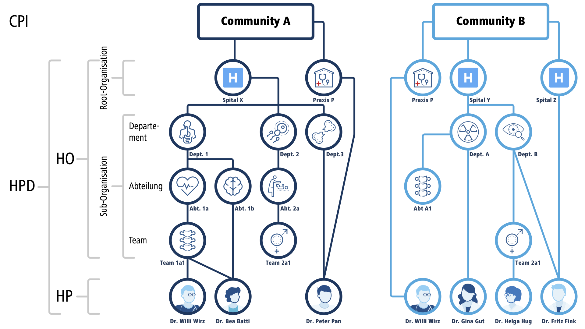

CH EPR FHIR (R4)
4.0.1 - trial-use

CH EPR FHIR (R4)
4.0.1 - trial-use

This page is part of the CH EPR FHIR (R4) (v4.0.1: DSTU 4) based on FHIR (HL7® FHIR® Standard) R4. This is the current published version. For a full list of available versions, see the Directory of published versions
This section specifies Swiss national extensions to Mobile Care Services Discovery (mCSD). mCSD is published as an IHE ITI Trial Implementation profile.
In the Swiss EPR, the mCSD profile ensures that different systems can search for healthcare organizations and professionals. It also allows systems to provide updated information about healthcare organizations and professionals.
A primary system wants to search for healthcare organizations or professionals. It can perform an ITI-90 request with search parameters to get a list of matched resources and retrieve a resource with its identifier. It offers an alternative to the HPD ITI-58 transaction, which is SOAP-based.
The Request Care Services Updates [ITI-91] transaction is not used in this national extension.
A primary system wants to provide updated information about its healthcare organizations or professionals to a directory. It can perform a CH:mCSD-1 request to update a resource. It offers an alternative to the HPD ITI-59 transaction, which is SOAP-based.
This figure shows the actors directly involved in the Mobile Care Services Discovery Profile and the relevant transactions between them.
The Swiss national extension does not implement the 'Location Distance Option'.
This national extension enforces authentication and authorization for access control. Therefore, actors of this profile must be grouped with actors of other profiles according to the following table:
| Actor | Required Grouping | Optionality |
|---|---|---|
| Care Services Selective Consumer | IUA Authorization Client | R |
| Care Services Selective Supplier | IUA Resource Server | R |
| Care Services Source | IUA Authorization Client | R |
| Care Services Directory | IUA Resource Server | R |
This national extension enforces authentication and authorization of access to the Care Services Selective Supplier using the IUA profile with basic access token as described in IUA.
The Swiss extension uses examples from eHealthSuisse: 